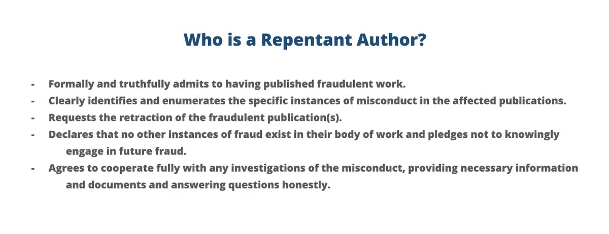
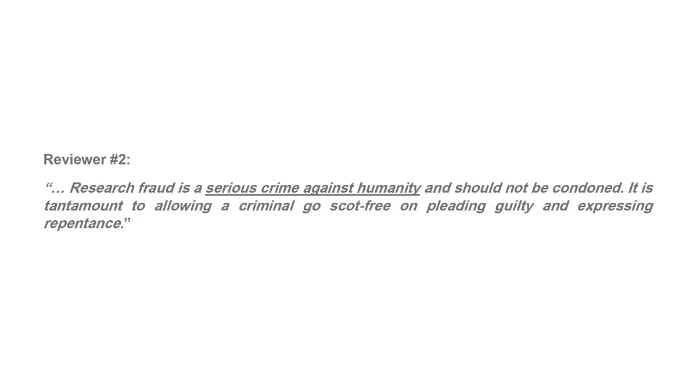

By this point in the story, a broader question had emerged.
If institutions are often reluctant to retract problematic papers, how can scientific correction be strengthened?
Years of pursuing the Shiraz University cases suggested one possible answer.
One of the strongest barriers to correction appeared to be fear.
Fear of embarrassment.
Fear of reputational damage.
Fear of institutional consequences.
Again and again, I observed situations in which individuals seemed willing to tolerate unresolved problems because acknowledging them publicly appeared more costly than ignoring them.
This observation led to a different line of inquiry.
What if scientific systems provided meaningful incentives for voluntary correction?
What if admitting a mistake became less costly than defending it indefinitely?
The result of that inquiry was a conceptual framework published in 2025 in Accountability in Research under the title:
Self-Retraction as Redemption: Forgiveness for Repentant Authors
(Also see Self-Retraction as Redemption )
Its central idea is straightforward.
Authors and institutions should be encouraged to disclose and correct problematic work voluntarily through structured pathways that reduce the perceived risks of self-correction.
Rather than treating every correction solely as a punitive event, the model explores whether carefully designed forms of conditional forgiveness can encourage earlier and more frequent correction of the scientific record.

The proposal extends beyond individual authors.
It examines how incentives could operate across multiple institutional levels, from researchers and departments to universities and broader scientific organizations.
Whether the model ultimately succeeds or fails is a matter for future debate and empirical testing.
What matters here is its origin.
The idea emerged directly from the experiences documented throughout Lesson One.
The same cases that exposed resistance to correction also inspired a search for new mechanisms capable of making correction more likely.

Response and argument from one reviewer opposing publication of the paper.